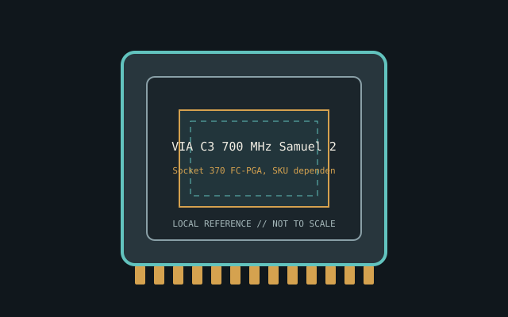

[ INDIVIDUAL CPU COMPONENT ]
VIA C3 700 MHz Samuel 2
Samuel 2 C3 x86 CPU, 700 MHz, 100 MHz bus class, 128 KB L1 (64 KB instruction + 64 KB data), 64 KB L2. Model-specific record; confirm the complete part marking before installation.

IDENTIFICATION: VIA C3 700 MHz Samuel 2. Product name alone does not establish package, stepping, voltage or firmware compatibility.
Verified model specifications
| Catalog path | Other → VIA processors |
|---|---|
| Model and compute | Samuel 2 C3 x86 CPU, 700 MHz, 100 MHz bus class, 128 KB L1 (64 KB instruction + 64 KB data), 64 KB L2 |
| Package / socket | Socket 370 FC-PGA, SKU dependent |
| Compatibility | C3-aware Socket 370 BIOS; Coppermine/Tualatin fit isn't universal |
| Stepping and variants | Samuel 2 differs from Samuel/Ezra; verify CPUID |
Compatibility and service
- C3-aware Socket 370 BIOS; Coppermine/Tualatin fit isn't universal
- Samuel 2 differs from Samuel/Ezra; verify CPUID
- Retain heatsink/voltage; document marking
- Confirm board manual, exact CPU support list, firmware, voltage/power, memory and cooling before use; never force a package.
Service & archival notes
Retain heatsink/voltage; document marking
Photograph package, markings, contacts and date/lot codes before repair. Log host board, BIOS/microcode, memory, cooler, condition, provenance and source revision.
Sources & further reading
- VIA C3 Samuel 2 700 MHz datasheetManufacturer documentation archive; verify core revision.
- VIA C3 700 MHz hardware recordIndependent model cross-reference.
- Various Creators — VIA C3 Samuel 2 800MHz Retro DemoIndependent video review; treat as supplementary context, not primary manufacturer documentation.
Manufacturer documents take precedence. Family-level references may not resolve every stepping; verify the marking and motherboard CPU list.